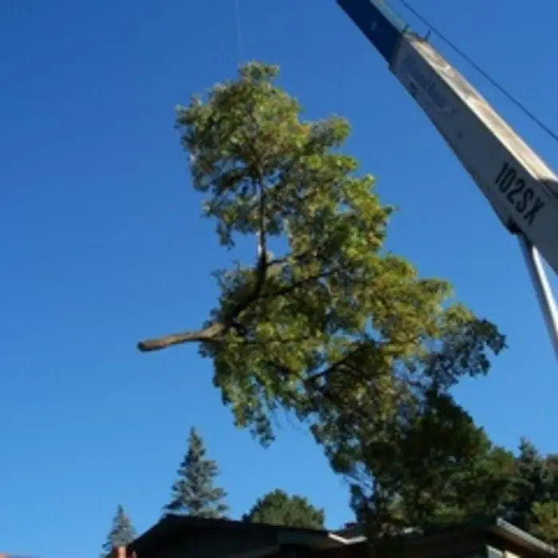

Tree Removal
Dead, leaning or unwanted trees taken down safely, with full cleanup.
When a big tree is leaning over your house, a crane lets us lift it out piece by piece without dropping anything near your roof.
Most trees can be climbed and lowered on ropes. Some can't, or shouldn't be. A crane is the safest choice when:

Crane time adds to the cost of a job, but it isn't always the most expensive option. For a large, hazardous tree, the time saved and the reduced risk to your home can make crane removal the better value. We'll quote both methods if both are realistic, so you can compare. See our cost guide for more on what drives the price.
Frozen ground supports heavy equipment much better than soft spring soil, so winter is often the best time for planned crane removals. If the tree isn't an emergency, booking it for the cold months can mean less lawn damage and easier scheduling. See our winter tree removal guide.
Large trees leaning over buildings, dead or brittle trees that are unsafe to climb, and trees with no room to lower pieces usually call for a crane. We will tell you during the free estimate.
Usually on the street or driveway. We plan the setup ahead of time and handle traffic control when needed.
We use outrigger pads to spread the weight and protect hard surfaces.
Yes. A crane is often the safest way to lift a fallen tree off a roof without causing more damage.
Call or text for a free, no-obligation quote. We serve homeowners all across Blaine, MN.